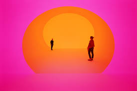
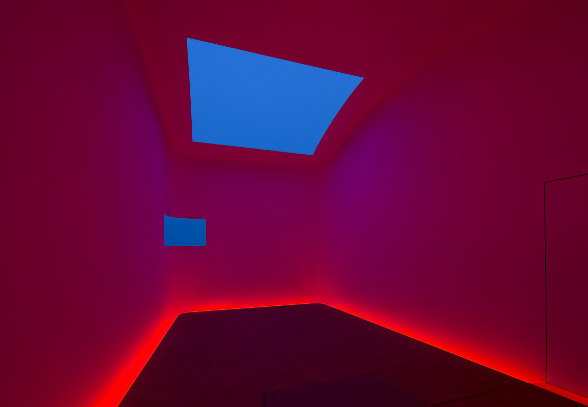

A hover state is a CSS psuedo-class, the :hover selector is used to select elements when you mouse over them. Most often we think of hover effects applying to links, however, any HTML element  can have a hover state. You can even effect your mouse cursor while hovering.
can have a hover state. You can even effect your mouse cursor while hovering.
Using hover states and advancedCSS selectors you can acheive a myriad of interesting interactive effects without much complex coding. It's escpecially interesting to think of it's effects on text. For instance in this paragraph hovering on the letter "c" changes the appearance of all "o"s which come after it.
You can also interact with images. For instance, this paragraph has several images hidden behind it. You can set a hover state to find all children of an element with a certain tag, class, or other html attribute. By adjusting the transition-delay of elements, you can have them appear at different rates.  
The shape of elements can be changed too, you can scale them, move them around the page, and otherwise alter block level elements. When hovering on this paragraph, you will change the shape, background-color, and scale of the object behind it.
Hover states can also use CSS to make notes about your text appear on hover. This can take the form of a tooltipThis is a tooltip, you would nest the elements within each other and use child selectors to change their appearance.
Advanced CSS animations, filters, and transitions can acheive dimension, blur, and other motion effects.

THE END.